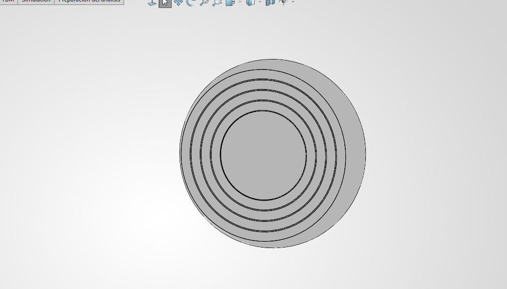
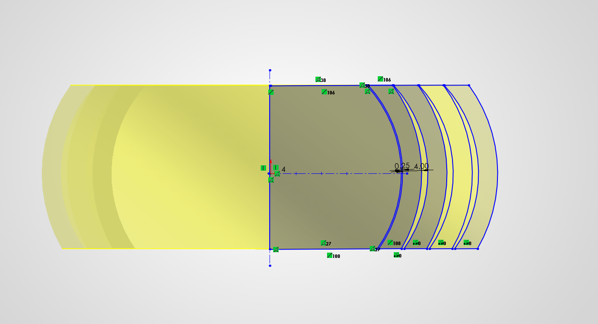

Reporte de Práctica: Manufactura Aditiva e Impresión 3D
Asignatura: Proyecto de Ingeniería I
Institución: IBERO Puebla
Fecha: 18 de Septiembre del 2026
1. Introducción a las Tecnologías de Manufactura Aditiva
La manufactura aditiva (impresión 3D) es un proceso de fabricación que permite construir objetos tridimensionales superponiendo capas sucesivas de material a partir de un modelo digital CAD. A diferencia de los métodos sustractivos (como el maquinado CNC), la impresión 3D optimiza el uso de material y permite crear geometrías complejas que serían imposibles de fabricar de forma convencional.
Clasificación de Tecnologías de Impresión 3D
- Stereolithography (SLA): Emplea un láser UV para curar y solidificar resina fotopolimérica líquida capa por capa. Destaca por su alta precisión y acabado superficial liso.
- Selective Laser Sintering (SLS): Utiliza un láser de alta potencia para fusionar pequeñas partículas de polvo termoplástico (generalmente nailon). No requiere estructuras de soporte debido a que el polvo no sinterizado actúa como sustento.
- Fused Deposition Modeling (FDM): Es la tecnología más común. Extruye un filamento termoplástico a través de una boquilla caliente, depositando el material capa por capa sobre una plataforma.
- Digital Light Processing (DLP): Similar a SLA, pero utiliza un proyector de luz digital para curar una capa completa de resina en un solo destello, aumentando significativamente la velocidad de impresión.
- Multi Jet Fusion (MJF): Aplica agentes aglutinantes y de detalle sobre un lecho de polvo termoplástico, los cuales se activan con lámparas infrarrojas para fusionar el material.
- PolyJet: Funciona de forma similar a una impresora de inyección de tinta, pulverizando fotopolímeros líquidos sobre una bandeja que se curan instantáneamente con luz UV.
- Direct Metal Laser Sintering (DMLS): Tecnología para componentes metálicos que sinteriza polvo de metal utilizando un láser de fibra.
- Electron Beam Melting (EBM): Utiliza un haz de electrones en un entorno de alto vacío para fundir polvo metálico, ideal para aplicaciones aeroespaciales y médicas.
2. Capacidad Operativa en FabLab Puebla
El laboratorio FabLab Puebla cuenta con un parque industrial de 27 impresoras 3D, enfocadas principalmente en las tecnologías FDM, SLA y MSLA/DLP.
Inventario de Equipos
- Ender 3 (14 unidades): Equipos FDM versátiles y económicos, ampliamente utilizados para prototipado rápido y pruebas conceptuales.
- Sindoh 3DWOX (5 unidades): Impresoras FDM de cabina cerrada, optimizadas para el entorno educativo debido a su estabilidad térmica y seguridad.
- Ultimaker 2+ (2 unidades): Impresoras FDM profesionales reconocidas por su fiabilidad y precisión en tolerancias dimensionales.
- Elegoo Mars 3 (1 unidad): Impresora MSLA (Resina) ideal para piezas de dimensiones reducidas que requieren alta resolución.
- Elegoo Saturn 2 (1 unidad): Impresora MSLA con volumen de impresión ampliado para lotes de producción o piezas de resina de mayor tamaño.
- Anycubic Photon Mono M5S (1 unidad): Impresora MSLA de alta velocidad con pantalla monocromática de alta definición.
- Formlabs Form 1 (1 unidad): Impresora SLA de grado profesional para prototipos de alta precisión geométrica.
- ROSTOCK MAX™ V3 (1 unidad): Impresora FDM tipo Delta, caracterizada por su alta velocidad de desplazamiento y amplio volumen cilíndrico Z.
- Stratasys (1 unidad): Equipo FDM industrial para aplicaciones avanzadas con materiales de grado de ingeniería.
3. Guía de Materiales para Impresión FDM
A continuación se detallan las características térmicas y mecánicas de los filamentos disponibles en el laboratorio:
| Material | Temp. Boquilla | Temp. Cama | Propiedades Principales | Aplicaciones Típicas |
|---|---|---|---|---|
| PLA | 190 - 220 °C | 50 - 60 °C | Rígido, fácil impresión, bajo coeficiente de contracción. | Modelos estéticos, prototipos rápidos. |
| ABS | 230 - 250 °C | 80 - 110 °C | Alta resistencia al impacto y temperatura, propenso al warping. | Carcasas mecánicas, piezas funcionales. |
| PETG | 230 - 250 °C | 70 - 80 °C | Excelente adherencia intercapa, flexibilidad moderada y resistencia química. | Piezas estructurales, recipientes. |
| Nylon (PA) | 240 - 260 °C | 70 - 100 °C | Alta durabilidad, resistencia a la abrasión y bajo fricción. | Engranajes, bujes, componentes mecánicos. |
| TPU | 210 - 230 °C | 20 - 60 °C | Elastómero flexible, alta resistencia a la tracción e impacto. | Sellos, empaques, llantas de prueba. |
Criterios de Selección (Ventajas y Requerimientos de Hardware)
- PLA: Económico y no requiere cabina cerrada. Limitado por su fragilidad y baja resistencia térmica (\(>60^\circ\text{C}\)).
- ABS / ASA: Requieren cama caliente elevada y preferentemente impresoras con cabina cerrada (enclosure) para evitar agrietamiento por corrientes de aire.
- Materiales Compuestos (Carbon Fiber / Metal Fill): Requieren boquillas de acero endurecido o rubí, ya que los materiales abrasivos desgastan rápidamente las boquillas estándar de latón.
4. Reglas de Diseño para Manufactura Aditiva (DfAM)
Para optimizar la fabricabilidad en impresión 3D FDM, se deben seguir las siguientes directrices de diseño:
- Ángulo de Voladizo (Overhang Angle): Ángulos inferiores a \(45^\circ\) respecto a la horizontal requieren soportes. Diseños con ángulos superiores a \(45^\circ\) se consideran autoportantes.
- Puentes (Bridging): Luces horizontales suspendidas sin soporte. La calidad depende de la velocidad de enfriamiento del ventilador de capa y la distancia del vano.
- Tolerancias de Ensamble (Clearance): Se debe dejar un espacio libre de entre \(0.20\text{ mm}\) y \(0.50\text{ mm}\) entre piezas móviles adyacentes para evitar fusiones accidentales.
- Anisotropía: Las piezas FDM son más débiles en el eje Z debido a que la unión intercapa es de carácter térmico/mecánico. La orientación de la pieza debe alinearse de modo que las tensiones principales actúen en el plano XY.
- Estrategia de Relleno (Infill):
- Porcentaje: \(10\% - 20\%\) para prototipos; \(>50\%\) para componentes sometidos a cargas mecánicas.
- Patrones en UltiMaker Cura:
- Lines / Grid: Priorizan la velocidad de impresión en 2D.
- Gyroid / Cubic: Proporcionan resistencia mecánica isotrópica en 3D.
5. Caso de Estudio: Mecanismo Print-in-Place en SolidWorks
En la sesión práctica impartida por el profesor Oliver, se abordó el diseño de un mecanismo articulado tipo Print-in-Place mediante SolidWorks, el cual permite obtener partes en movimiento en una sola operación de impresión sin requerir ensamblaje posterior.
Análisis Técnico del Diseño
- Geometría Interconectada: El modelo consiste en una serie de anillos concéntricos con perfiles esféricos cóncavos y convexos. La curvatura actúa como un tope mecánico que impide que los anillos se salgan verticalmente de su posición.
- Control de Tolerancia Radial: Se aplicó una holgura constante de \(0.25\text{ mm}\) entre cada anillo adyacente en el croquis de SolidWorks. Esta tolerancia es mayor que la resolución XY de la impresora Ender 3 (\(\pm 0.1\text{ mm}\)), asegurando que el plástico no se fusione durante el proceso de extrusión.
- Preparación en el Laminador (Slicer): En el software UltiMaker Cura, se configuró el modelo asegurando que la opción de soporte estuviera desactivada en las cavidades internas de las holguras, permitiendo que cada anillo se imprima de forma independiente y se libere mecánicamente al finalizar el proceso.

